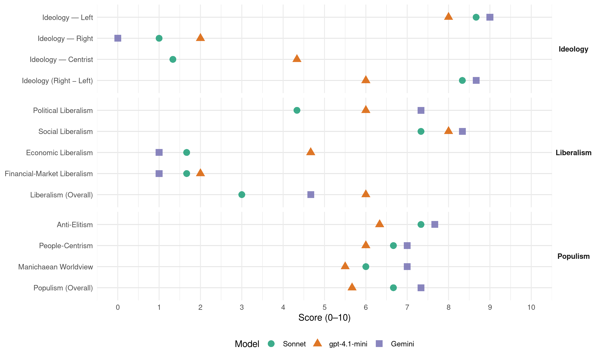

(Norway, 2017)
manifesto_id 12230_201709
Get full text: This site shows derived annotations and short verbatim quotes only. The full manifesto text is © Manifesto Project / WZB — obtain it via manifesto-project.wzb.eu using the manifesto_id above.
Headline scores
| Dimension | Sonnet | gpt-4.1-mini | Gemini |
|---|---|---|---|
| Populism (Overall) | 6.7 | 5.7 | 7.3 |
| Anti-Elitism | 7.3 | 6.3 | 7.7 |
| People-Centrism | 6.7 | 6.0 | 7.0 |
| Manichaean Worldview | 6.0 | 5.5 | 7.0 |
| Ideology (Right − Left) | 8.3 | 6.0 | 8.7 |
| Liberalism (Overall) | 3.0 | 6.0 | 4.7 |
| Political Liberalism | 4.3 | 6.0 | 7.3 |
| Social Liberalism | 7.3 | 8.0 | 8.3 |
| Economic Liberalism | 1.7 | 4.7 | 1.0 |
| Financial-Market Liberalism | 1.7 | 2.0 | 1.0 |
Evidence per dimension
Economic Liberalism
Gemini · score 1.0 · verified · chunk 1
“bekjempe dagens ekstreme markedsliberalisme”
sosialistisk økonomi med effektiv produksjon og rettferdig fordeling. Rødt vil bekjempe dagens ekstreme markedsliberalisme og vil arbeide
Gemini · score 1.0 · verified · chunk 2
“Stoppe markedsretting og privatisering av helse- og velferdstjenester”
8. Sykehus og helsetjenester 8. 1 Stoppe markedsretting og privatisering av helse- og velferdstjenester 8. 2 Vrake helseforetaksmodellen
Gemini · score 1.0 · verified · chunk 3
“forbyr prisdumping”
Det må innføres strengere regler som begrenser eierkonsentrasjon og forbyr prisdumping. f. Innførsel av soyaprodusert fôr
gpt-4.1-mini · score 2.0 · verified · chunk 1
“kapitalismen er et økonomisk system hvor målet er å stadig øke utbyttet”
Årsaken til klasseforskjellene er at det store flertallet lønnsarbeidere skaper verdiene, mens et lite mindretall av eiere bestemmer og sikrer seg alle overskuddene. Dette systemet er både urettferdig, miljøskadelig og ustabilt. Kapitalismen er et økonomisk system hvor målet er å stadig øke utbyttet.
gpt-4.1-mini · score 7.0 · verified · chunk 2
“Rødt vil styrke offentlig sektor og motarbeide privatisering”
Rødt vil reversere privatisering av velferdsgodene i samfunnet og holder fast på en offentlig demokratisk styrt modell for helsetjenester som møter folks behov. Staten skal kjøpe opp miljøbedrifter som er trua av utflagging eller nedleggelse.
gpt-4.1-mini · score 5.0 · verified · chunk 3
“Stopp i sentralisering og svekking av offentlige tjenester”
Stopp i sentralisering og svekking av offentlige tjenester; ambulansetjenester, sykehus, offentlige kontor, politi, post, rettsvesen, alarmsentral, brannvesen og Innovasjon Norge. Reversering av allerede gjennomført sentralisering.
Sonnet · score 1.0 · verified · chunk 1
“bekjempe dagens ekstreme markedsliberalisme”
Rødt vil bekjempe dagens ekstreme markedsliberalisme og vil arbeide for å flytte makt fra markedet til demokratiske organer
Sonnet · score 2.0 · verified · chunk 2
“Stoppe markedsretting og privatisering”
8.1 Stoppe markedsretting og privatisering av helse- og velferdstjenester
Sonnet · score 2.0 · verified · chunk 3
“Stoppe privatiseringen av offentlige selskaper”
d. Stoppe privatiseringen av offentlige selskaper og ta tilbake eierskapet til offentlig eie.
Financial-Market Liberalism
Gemini · score 1.0 · verified · chunk 1
“samfunnsbank som ikke driver spekulasjon i finansmarkedene”
markedet til demokratiske organer a. Vi vil opprette en samfunnsbank som ikke driver spekulasjon i finansmarkedene, som tilbyr lån
Gemini · score 1.0 · verified · chunk 2
“ikke overlates til forsikringsselskaper som bare vil ha profitt”
Obligatorisk tjenestepensjon (OTP) i privat sektor må administreres av partene i en samlet ordning, ikke overlates til forsikringsselskaper som bare vil ha profitt.
gpt-4.1-mini · score 2.0 · verified · chunk 1
“Vi vil opprette en samfunnsbank som ikke driver spekulasjon i finansmarkedene”
Vi vil opprette en samfunnsbank som ikke driver spekulasjon i finansmarkedene, som tilbyr lån til personer på forsvarlige vilkår og sikrer god kapitaltilgang til samfunnsnyttige formål i Norge som statsbankene i dag ikke dekker. I tillegg må reglene for kommersielle banker strammes inn.
Sonnet · score 1.0 · verified · chunk 1
“Innføring av skatt på finanstransaksjoner”
Innføring av skatt på finanstransaksjoner som valuta-, aksje- og derivathandel, i form av en såkalt Tobin-skatt
Sonnet · score 2.0 · verified · chunk 2
“Forsikringsselskapene må gjøre premiene i pensjonsforsikringene kjønns- og aldersnøytrale”
Forsikringsselskapene må gjøre premiene i pensjonsforsikringene kjønns- og aldersnøytrale. g. På sikt skal økt arbeidsgiveravgift brukes til å øke folketrygden
Sonnet · score 2.0 · verified · chunk 3
“Finansiell åpenhet er nødvendig i kampen mot kapitalflukt”
Finansiell åpenhet er nødvendig i kampen mot kapitalflukt, skatteunndragelse og aggressiv skatteplanlegging. Mekanismen for land-for-land-rapportering (LLR) som nå er på plass er for svak.
Political Liberalism
Gemini · score 7.0 · verified · chunk 1
“Flytte makt fra markedet til demokratiske organer”
1. Økonomi 1.1 Flytte makt fra markedet til demokratiske organer 1.2 Bruke finanspolitikken
Gemini · score 8.0 · verified · chunk 2
“tale-, trykke- og organisasjonsfrihet, og stemmerett ved hemmelige valg”
Det omfatter tale-, trykke- og organisasjonsfrihet, og stemmerett ved hemmelige valg der en kan velge mellom flere partier.
Gemini · score 7.0 · verified · chunk 3
“sikre retten til å drive politisk kamp”
økonomisk og miljøkriminalitet. f. Sikre retten til å drive politisk kamp mot undertrykkelse og urettferdighet gjennom
gpt-4.1-mini · score 3.0 · verified · chunk 1
“Demokratisk styring av universiteter og høyskoler gjennom valgte kollegiale organer”
Demokratisk styring av universiteter og høyskoler gjennom valgte kollegiale organer og valgte ledere. At den individuelle forskningsretten avtalefestes. At forskningsbasert undervisning skal garanteres gjennom styrking av ansattes rett og mulighet til forskning.
gpt-4.1-mini · score 8.0 · verified · chunk 2
“Rødt vil forsvare demokratiske rettigheter som ytringsfrihet og stemmerett”
I norsk lovgivning er det nedfelt en rekke lover og regler som gir innbyggerne demokratiske rettigheter. Det omfatter tale-, trykke- og organisasjonsfrihet, og stemmerett ved hemmelige valg der en kan velge mellom flere partier. Dette er lover og forskrifter som Rødt vil forsvare.
gpt-4.1-mini · score 7.0 · verified · chunk 3
“Politiet skal ha et sivilt preg og være demokratisk forankret”
Politiet skal ha et sivilt preg og være demokratisk forankret. Politiet har i tillegg til militæret monopol på legal anvendelse av vold. Men vold har også vært anvendt mot streikende arbeidere - sist havnearbeidere i Tromsø 2014 -, innvandrere og utsatte grupper; i noen tilfeller faktisk med døden til følge (Obiora).
Sonnet · score 3.0 · verified · chunk 1
“Flytte makt fra markedet til demokratiske organer”
1.1 Flytte makt fra markedet til demokratiske organer. Vi vil opprette en samfunnsbank som ikke driver spekulasjon
Sonnet · score 7.0 · verified · chunk 2
“folkevalgt styring med ansvar for sykehusenes drift”
Bygge ned byråkratiet og gjeninnføre folkevalgt styring med ansvar for sykehusenes drift både på nasjonalt og regionalt nivå.
Sonnet · score 3.0 · verified · chunk 3
“demokrati, kvinnefrigjøring og likeverd”
Norge må i stedet stille seg solidarisk med de kreftene som slåss for sjølråderett, demokrati, kvinnefrigjøring og likeverd.
Liberalism (Overall)
Gemini · score 4.0 · verified · chunk 1
“bekjempe dagens ekstreme markedsliberalisme”
sosialistisk økonomi med effektiv produksjon og rettferdig fordeling. Rødt vil bekjempe dagens ekstreme markedsliberalisme og vil arbeide
Gemini · score 5.0 · verified · chunk 2
“tale-, trykke- og organisasjonsfrihet, og stemmerett ved hemmelige valg”
Det omfatter tale-, trykke- og organisasjonsfrihet, og stemmerett ved hemmelige valg der en kan velge mellom flere partier.
Gemini · score 5.0 · verified · chunk 3
“sikre retten til å drive politisk kamp”
økonomisk og miljøkriminalitet. f. Sikre retten til å drive politisk kamp mot undertrykkelse og urettferdighet gjennom
gpt-4.1-mini · score 4.0 · verified · chunk 1
“Demokratisk styring av universiteter og høyskoler gjennom valgte kollegiale organer”
Demokratisk styring av universiteter og høyskoler gjennom valgte kollegiale organer og valgte ledere. At den individuelle forskningsretten avtalefestes. At forskningsbasert undervisning skal garanteres gjennom styrking av ansattes rett og mulighet til forskning.
gpt-4.1-mini · score 8.0 · verified · chunk 2
“Rødt vil forsvare demokratiske rettigheter som ytringsfrihet og stemmerett”
I norsk lovgivning er det nedfelt en rekke lover og regler som gir innbyggerne demokratiske rettigheter. Det omfatter tale-, trykke- og organisasjonsfrihet, og stemmerett ved hemmelige valg der en kan velge mellom flere partier. Dette er lover og forskrifter som Rødt vil forsvare.
gpt-4.1-mini · score 6.0 · verified · chunk 3
“Politiet skal ha et sivilt preg og være demokratisk forankret”
Politiet skal ha et sivilt preg og være demokratisk forankret. Politiet har i tillegg til militæret monopol på legal anvendelse av vold. Men vold har også vært anvendt mot streikende arbeidere - sist havnearbeidere i Tromsø 2014 -, innvandrere og utsatte grupper; i noen tilfeller faktisk med døden til følge (Obiora).
Sonnet · score 3.0 · verified · chunk 1
“Den grenseløse markedsliberalismen gjør vanlige mennesker”
Den grenseløse markedsliberalismen gjør vanlige mennesker og samfunn til brikker i en kapitalisme som ødelegger ressursgrunnlaget
Sonnet · score 5.0 · mixed · chunk 2
“leve ut sin identitet, seksualitet og kjønnsuttrykk uten fare for å bli diskriminert”
Rødt ønsker å sprenge rammene for de trange kjønnsrollene slik at alle kan leve ut sin identitet, seksualitet og kjønnsuttrykk uten fare for å bli diskriminert eller trakassert.
Sonnet · score 3.0 · verified · chunk 3
“EØS-avtalen binder oss til EUs markedsliberale politikk”
EØS-avtalen binder oss til EUs markedsliberale politikk, men også den påtroppende (og hemmelige) handelsavtalen «TTIP» mellom USA og EU. Rødt er imot TTIP.
Anti-Elitism
Gemini · score 8.0 · verified · chunk 1
“samler makt og penger hos en liten elite”
brikker i en kapitalisme som ødelegger ressursgrunnlaget på jorda og samler makt og penger hos en liten elite. Rødts alternativ
Gemini · score 7.0 · verified · chunk 2
“sentrale politikere legger større vekt på bedriftsøkonomiske prinsipper”
Et forvokst helsebyråkrati og sentrale politikere legger større vekt på bedriftsøkonomiske prinsipper enn helsefaglige vurderinger.
Gemini · score 8.0 · verified · chunk 3
“Kriminalitet begått av maktelite skal ikke bagatelliseres”
arbeidsmiljøkriminalitet og miljøkriminalitet. Kriminalitet begått av maktelite skal ikke bagatelliseres og henlegges. Dette forutsetter at politiet
gpt-4.1-mini · score 9.0 · verified · chunk 1
“kapitalismen er et økonomisk system hvor målet er å stadig øke utbyttet”
Årsaken til klasseforskjellene er at det store flertallet lønnsarbeidere skaper verdiene, mens et lite mindretall av eiere bestemmer og sikrer seg alle overskuddene. Dette systemet er både urettferdig, miljøskadelig og ustabilt. Kapitalismen er et økonomisk system hvor målet er å stadig øke utbyttet. For at dette systemet skal overleve, er det vanlige arbeidere som må betale prisen.
gpt-4.1-mini · score 7.0 · verified · chunk 2
“Kyniske arbeidsgivere og liberalistisk økonomisk politikk som må angripes”
Arbeidsgivere utnytter arbeidsinnvandrernes svakere posisjon til å angripe rettigheter og lønnsvilkår gjennom sosial dumping. EØS-avtalen har lagt forholdene til rette for det. En samlet og sterk fagbevegelse må til for å slå tilbake raseringen av arbeidslivet, i solidaritet og i samarbeid med arbeidsinnvandrerne. Det er kyniske arbeidsgivere og liberalistisk økonomisk politikk som må angripes – ikke arbeidere som har migrert hit.
gpt-4.1-mini · score 3.0 · verified · chunk 3
“kapitalkreftene ønsker å kontrollere”
De samiske områdene inneholder store naturrikdommer som kapitalkreftene ønsker å kontrollere. Utmarksforvaltninga må bygge på at lokalbefolkninga har førsteretten til utnytting av fornybare og ikkefornybare ressurser i sitt virkeområde, og at bruksrett til disse ressursene og rettigheter kan reserveres bygdelag og innbyggere av kommune og fylke.
Sonnet · score 8.0 · verified · chunk 1
“en liten elite”
samler makt og penger hos en liten elite. Rødts alternativ er en miljøvennlig, sosialistisk økonomi
Sonnet · score 6.0 · verified · chunk 2
“forsikringsselskaper som bare vil ha profitt”
OTP i privat sektor må administreres av partene i en samlet ordning, ikke overlates til forsikringsselskaper som bare vil ha profitt.
Sonnet · score 8.0 · verified · chunk 3
“kapitalkreftene ønsker å kontrollere”
De samiske områdene inneholder store naturrikdommer som kapitalkreftene ønsker å kontrollere. Utmarksforvaltninga må bygge på at lokalbefolkninga har førsteretten
Ideology — Centrist
gpt-4.1-mini · score 3.0 · verified · chunk 1
“Rødt kan ikke slå dette tilbake alene. Derfor støtter vi folk som organiserer seg”
Rødt kan ikke slå dette tilbake alene. Derfor støtter vi folk som organiserer seg for å kjempe mot forskjells-Norge. Fagbevegelsen er viktigst her, fordi den utfordrer eiernes makt der hvor forskjellene oppstår.
gpt-4.1-mini · score 7.0 · verified · chunk 2
“Det er innbyggernes behov som skal ligge til grunn for driften av all kommunalt eid virksomhet”
Oppgaver som krever stor grad av samordning mellom flere kommuner bør løses gjennom interkommunalt samarbeid, uten at dette må gå på bekostning av folkevalgt styring. Det er innbyggernes behov som skal ligge til grunn for driften av all kommunalt eid virksomhet.
gpt-4.1-mini · score 3.0 · verified · chunk 3
“folket i distrikts-Norge sin kamp mot sentralisering”
Rødt vil ta hele landet i bruk og støtter folket i distrikts-Norge sin kamp mot sentralisering og for lokal forvaltning.
Sonnet · score 1.0 · verified · chunk 1
“kampen mot forskjells-Norge”
Rødts hovedsak i valgperioden 2017-2021, er kampen mot forskjells-Norge. De økonomiske forskjellene i Norge er klasseforskjeller.
Sonnet · score 2.0 · verified · chunk 2
“gi alle økonomisk trygghet”
Folketrygden må stadig utvikles og forbedres for å gi alle økonomisk trygghet
Sonnet · score 1.0 · verified · chunk 3
“Rødt krever folkeavstemning om EØS-avtalen”
Rødt krever folkeavstemning om EØS-avtalen, da folket aldri tidligere har hatt mulighet til å stemme JA eller NEI.
Ideology — Left
Gemini · score 9.0 · verified · chunk 1
“erstatte kapitalismen med sosialisme”
urettferdig, miljøskadelig og ustabilt. Rødt vil erstatte kapitalismen med sosialisme. Dette er et
Gemini · score 9.0 · verified · chunk 2
“Rasisme er å rangere noen som mindre verdt, og er innvevd i kapitalismen”
Rasisme er å rangere noen som mindre verdt, og er innvevd i kapitalismen. Rasistiske forestillinger om «de andre» har vært brukt
Gemini · score 9.0 · verified · chunk 3
“interessene til arbeiderklassen og det store flertallet”
solidarisk system som tar utgangspunkt i interessene til arbeiderklassen og det store flertallet av jordas befolkning, ikke et lite
gpt-4.1-mini · score 9.0 · verified · chunk 1
“Rødt vil erstatte kapitalismen med sosialisme”
Årsaken til klasseforskjellene er at det store flertallet lønnsarbeidere skaper verdiene, mens et lite mindretall av eiere bestemmer og sikrer seg alle overskuddene. Dette systemet er både urettferdig, miljøskadelig og ustabilt. Rødt vil erstatte kapitalismen med sosialisme.
gpt-4.1-mini · score 8.0 · verified · chunk 2
“Rødt vil reversere privatisering av velferdsgodene i samfunnet”
Rødt vil kjempe mot en utvikling der folk blir avhengige av private forsikringsordninger eller egen lommebok for å få den hjelpen de trenger. Vi vil reversere privatisering av velferdsgodene i samfunnet og holder fast på en offentlig demokratisk styrt modell for helsetjenester som møter folks behov.
gpt-4.1-mini · score 7.0 · verified · chunk 3
“kamp mot de sentraliserende økonomiske og politiske kreftene”
Det foregår en viktig kamp mot de sentraliserende økonomiske og politiske kreftene. Rødt vil ha levende distrikter der folk kan bo, med økt verdiskaping og nye arbeidsplasser innenfor de rammene naturen setter.
Sonnet · score 9.0 · verified · chunk 1
“Rødt vil erstatte kapitalismen med sosialisme”
Dette systemet er både urettferdig, miljøskadelig og ustabilt. Rødt vil erstatte kapitalismen med sosialisme.
Sonnet · score 8.0 · verified · chunk 2
“reversere privatisering av velferdsgodene”
Vi vil reversere privatisering av velferdsgodene i samfunnet og holder fast på en offentlig demokratisk styrt modell for helsetjenester
Sonnet · score 9.0 · verified · chunk 3
“arbeiderklassen og folket ellers i Norge”
Arbeiderklassen og folket ellers i Norge har ikke fellesinteresser med monopolkapitalen i land som utbytter eget folk og deltar i utbyttinga av folk i andre land.
Ideology (Right − Left)
Gemini · score 9.0 · verified · chunk 1
“erstatte kapitalismen med sosialisme”
urettferdig, miljøskadelig og ustabilt. Rødt vil erstatte kapitalismen med sosialisme. Dette er et
Gemini · score 8.0 · verified · chunk 2
“Rasisme er å rangere noen som mindre verdt, og er innvevd i kapitalismen”
Rasisme er å rangere noen som mindre verdt, og er innvevd i kapitalismen. Rasistiske forestillinger om «de andre» har vært brukt
Gemini · score 9.0 · verified · chunk 3
“interessene til arbeiderklassen og det store flertallet”
solidarisk system som tar utgangspunkt i interessene til arbeiderklassen og det store flertallet av jordas befolkning, ikke et lite
gpt-4.1-mini · score 7.0 · verified · chunk 1
“Rødt vil erstatte kapitalismen med sosialisme”
Dette systemet er både urettferdig, miljøskadelig og ustabilt. Rødt vil erstatte kapitalismen med sosialisme. Dette er et program med krav for kamp innenfor det kapitalistiske systemet, men også et program for en kamp for å mobilisere for systemendringer.
gpt-4.1-mini · score 7.0 · verified · chunk 2
“Rødt vil reversere privatisering av velferdsgodene i samfunnet”
Rødt vil kjempe mot en utvikling der folk blir avhengige av private forsikringsordninger eller egen lommebok for å få den hjelpen de trenger. Vi vil reversere privatisering av velferdsgodene i samfunnet og holder fast på en offentlig demokratisk styrt modell for helsetjenester som møter folks behov.
gpt-4.1-mini · score 4.0 · verified · chunk 3
“kamp mot de sentraliserende økonomiske og politiske kreftene”
Det foregår en viktig kamp mot de sentraliserende økonomiske og politiske kreftene. Rødt vil ha levende distrikter der folk kan bo, med økt verdiskaping og nye arbeidsplasser innenfor de rammene naturen setter.
Sonnet · score 9.0 · verified · chunk 1
“sosialistisk økonomi med effektiv produksjon og rettferdig fordeling”
Rødts alternativ er en miljøvennlig, sosialistisk økonomi med effektiv produksjon og rettferdig fordeling.
Sonnet · score 7.0 · verified · chunk 2
“reversere privatisering av velferdsgodene”
Vi vil reversere privatisering av velferdsgodene i samfunnet og holder fast på en offentlig demokratisk styrt modell for helsetjenester
Sonnet · score 9.0 · verified · chunk 3
“mot felles fiende, den internasjonaliserte monopolkapitalen”
er den avhengig av å samarbeide med klasseorganisasjoner i andre land mot felles fiende, den internasjonaliserte monopolkapitalen.
Ideology — Right
Gemini · score 0.0 · verified · chunk 2
“Arbeidsinnvandrere ønskes velkommen til Norge på norske lønns- og arbeidsvilkår”
At mennesker skal kunne jobbe og leve i Norge under gode forhold a. Arbeidsinnvandrere ønskes velkommen til Norge på norske lønns- og arbeidsvilkår eller bedre.
gpt-4.1-mini · score 2.0 · verified · chunk 1
“Flyktninger og asylsøkere blir framstilt som lykkejegere”
Flyktninger og asylsøkere blir framstilt som lykkejegere,” de andre” og mennesker som er mindreverdt. Rasismen hindrer oss i å se hvem som egentlig tjener på dagens system.
gpt-4.1-mini · score 2.0 · verified · chunk 2
“Politikere i flere land, også i Norge, spiller på frykt ved for eksempel å hevde at innvandring truer velferdsstaten”
Politikere i flere land, også i Norge, spiller på frykt ved for eksempel å hevde at innvandring truer velferdsstaten, eller at muslimer truer norsk kultur. Rasisme er farlig fordi det fører til utestengelse, hat og vold, og fordi det splitter arbeiderklassen.
gpt-4.1-mini · score 2.0 · verified · chunk 3
“styrke allsidig bruk av reinprodukt og legger til rette for kombinasjonsnæringer”
Arbeide for en omlegging av reindriftspolitikken, slik at man styrker allsidig bruk av reinprodukt og legger til rette for kombinasjonsnæringer.
Sonnet · score 1.0 · verified · chunk 1
“Alle arbeidsinnvandrere ønskes velkommen til Norge”
Alle arbeidsinnvandrere ønskes velkommen til Norge på norske lønns- og arbeidsvilkår eller bedre.
Sonnet · score 1.0 · verified · chunk 2
“forsvare det multikulturelle Norge”
Rødt vil ha et åpent og inkluderende Norge og vil arbeide for: 10.1 Å forsvare det multikulturelle Norge
Sonnet · score 1.0 · verified · chunk 3
“Ingen utenlandske militærbaser på norsk jord”
e. Ingen utenlandske militærbaser på norsk jord. f. Melde Norge ut av NATO og jobbe for en nordisk forsvarsallianse
Manichaean Worldview
Gemini · score 8.0 · verified · chunk 1
“urettferdig, miljøskadelig og ustabilt”
eiere bestemmer og sikrer seg alle overskuddene. Dette systemet er både urettferdig, miljøskadelig og ustabilt. Rødt vil erstatte
Gemini · score 6.0 · verified · chunk 2
“Private velferdsprofitører skal ikke tjene penger”
Private velferdsprofitører skal ikke tjene penger på folk som har flyktet.
Gemini · score 7.0 · verified · chunk 3
“bryte med den imperialistiske blokken”
utenrikspolitikken ved at vi bryte med den imperialistiske blokken, som med politiske, økonomiske og militære
gpt-4.1-mini · score 8.0 · verified · chunk 1
“Rasismen hindrer oss i å se hvem som egentlig tjener på dagens system”
Flyktninger og asylsøkere blir framstilt som lykkejegere,” de andre” og mennesker som er mindreverdt. Rasismen hindrer oss i å se hvem som egentlig tjener på dagens system. Rødt på Stortinget vil gi disse bevegelsene en tydelig stemme.
gpt-4.1-mini · score 5.0 · mixed · chunk 2
“Rasisme er farlig fordi det fører til utestengelse, hat og vold”
Rasisme er farlig fordi det fører til utestengelse, hat og vold, og fordi det splitter arbeiderklassen. Flyktninger og innvandrere… Det har vært en sterk vekst i rasisme og høyreekstremisme som bygger på rasisme i Europa de siste tiårene.
gpt-4.1-mini · score 3.0 · verified · chunk 3
“klasseorganisasjoner i andre land mot felles fiende”
For at den norske arbeiderklassen skal vinne fram i sine kamper her i Norge, er den avhengig av å samarbeide med klasseorganisasjoner i andre land mot felles fiende, den internasjonaliserte monopolkapitalen.
Sonnet · score 7.0 · verified · chunk 1
“kapitalismen tjener på å sette folkegrupper opp mot hverandre”
Den antirasistiske og antiimperialistiske bevegelsen er viktig fordi kapitalismen tjener på å sette folkegrupper opp mot hverandre
Sonnet · score 4.0 · verified · chunk 2
“private velferdsprofitører skal ikke tjene penger”
At asylmottak skal drives av det offentlige eller av ideelle organisasjoner. Private velferdsprofitører skal ikke tjene penger på folk som har flyktet.
Sonnet · score 7.0 · verified · chunk 3
“Kriminalitet begått av kapitalister og maktelite”
Kriminalitet begått av kapitalister og maktelite skal ikke bagatelliseres og henlegges. Dette forutsetter at politiet har kunnskap om og ressurser til å etterforske
People-Centrism
Gemini · score 7.0 · verified · chunk 1
“støtter vi folk som organiserer seg”
arbeidere som må betale prisen. Rødt kan ikke slå dette tilbake alene. Derfor støtter vi folk som organiserer seg for å kjempe
Gemini · score 6.0 · verified · chunk 2
“ta vare på folks behov i alle livsfaser”
Vårt mål er et kunnskapsbasert og moderne helsevesen som er i stand til å møte, respektere og ta vare på folks behov i alle livsfaser.
Gemini · score 8.0 · verified · chunk 3
“Fisken i havet tilhører det norske folket”
Genetisk mangfold uten privat eiendomsrett Fiskeri og fiskeoppdrett Fisken i havet tilhører det norske folket i fellesskap og kan ikke eies av
gpt-4.1-mini · score 8.0 · verified · chunk 1
“folk som organiserer seg for å kjempe mot forskjells-Norge”
Rødt kan ikke slå dette tilbake alene. Derfor støtter vi folk som organiserer seg for å kjempe mot forskjells-Norge. Fagbevegelsen er viktigst her, fordi den utfordrer eiernes makt der hvor forskjellene oppstår.
gpt-4.1-mini · score 6.0 · verified · chunk 2
“Det er innbyggernes behov som skal ligge til grunn for driften av all kommunalt eid virksomhet”
Rødt anser kommunen og eventuelle kommunale selskaper som innbyggernes egen eiendom og verktøy, for å kunne yte gode og likeverdige tjenester for alle som trenger det. Oppgaver som krever stor grad av samordning mellom flere kommuner bør løses gjennom interkommunalt samarbeid, uten at dette må gå på bekostning av folkevalgt styring. Det er innbyggernes behov som skal ligge til grunn for driften av all kommunalt eid virksomhet.
gpt-4.1-mini · score 4.0 · verified · chunk 3
“folket i distrikts-Norge sin kamp mot sentralisering”
Rødt vil ta hele landet i bruk og støtter folket i distrikts-Norge sin kamp mot sentralisering og for lokal forvaltning.
Sonnet · score 7.0 · verified · chunk 1
“det store flertallet lønnsarbeidere skaper verdiene”
Årsaken til klasseforskjellene er at det store flertallet lønnsarbeidere skaper verdiene, mens et lite mindretall av eiere
Sonnet · score 5.0 · verified · chunk 2
“gi alle økonomisk trygghet”
Folketrygden må stadig utvikles og forbedres for å gi alle økonomisk trygghet
Sonnet · score 8.0 · verified · chunk 3
“Rødt vil ha makten tilbake til folket”
Rødt vil ha makten tilbake til folket, ikke til delegasjoner i Brussel og andre maktsentra som forhandler avtaler bak vår rygg, mot folkeviljen.
Populism (Overall)
Gemini · score 8.0 · verified · chunk 1
“samler makt og penger hos en liten elite”
brikker i en kapitalisme som ødelegger ressursgrunnlaget på jorda og samler makt og penger hos en liten elite. Rødts alternativ
Gemini · score 6.0 · verified · chunk 2
“sentrale politikere legger større vekt på bedriftsøkonomiske prinsipper”
Et forvokst helsebyråkrati og sentrale politikere legger større vekt på bedriftsøkonomiske prinsipper enn helsefaglige vurderinger.
Gemini · score 8.0 · verified · chunk 3
“Kriminalitet begått av maktelite skal ikke bagatelliseres”
arbeidsmiljøkriminalitet og miljøkriminalitet. Kriminalitet begått av maktelite skal ikke bagatelliseres og henlegges. Dette forutsetter at politiet
gpt-4.1-mini · score 8.0 · verified · chunk 1
“kapitalismen er et økonomisk system hvor målet er å stadig øke utbyttet”
Årsaken til klasseforskjellene er at det store flertallet lønnsarbeidere skaper verdiene, mens et lite mindretall av eiere bestemmer og sikrer seg alle overskuddene. Dette systemet er både urettferdig, miljøskadelig og ustabilt. Kapitalismen er et økonomisk system hvor målet er å stadig øke utbyttet. For at dette systemet skal overleve, er det vanlige arbeidere som må betale prisen.
gpt-4.1-mini · score 6.0 · verified · chunk 2
“Kyniske arbeidsgivere og liberalistisk økonomisk politikk som må angripes”
Det er kyniske arbeidsgivere og liberalistisk økonomisk politikk som må angripes – ikke arbeidere som har migrert hit. En samlet og sterk fagbevegelse må til for å slå tilbake raseringen av arbeidslivet, i solidaritet og i samarbeid med arbeidsinnvandrerne.
gpt-4.1-mini · score 3.0 · verified · chunk 3
“kapitalkreftene ønsker å kontrollere”
De samiske områdene inneholder store naturrikdommer som kapitalkreftene ønsker å kontrollere. Utmarksforvaltninga må bygge på at lokalbefolkninga har førsteretten til utnytting av fornybare og ikkefornybare ressurser i sitt virkeområde, og at bruksrett til disse ressursene og rettigheter kan reserveres bygdelag og innbyggere av kommune og fylke.
Sonnet · score 7.0 · verified · chunk 1
“et lite mindretall av eiere bestemmer”
det store flertallet lønnsarbeidere skaper verdiene, mens et lite mindretall av eiere bestemmer og sikrer seg alle overskuddene
Sonnet · score 5.0 · verified · chunk 2
“forsikringsselskaper som bare vil ha profitt”
OTP i privat sektor må administreres av partene i en samlet ordning, ikke overlates til forsikringsselskaper som bare vil ha profitt.
Sonnet · score 8.0 · verified · chunk 3
“mot folkeviljen”
Rødt vil ha makten tilbake til folket, ikke til delegasjoner i Brussel og andre maktsentra som forhandler avtaler bak vår rygg, mot folkeviljen.
Social Liberalism